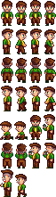
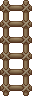
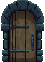
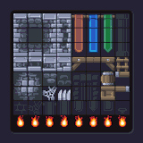

DWH52 - Don Hunter
CSC 2463
Final Project
Final Project: Time is Key!
Time is Key! - Video Demonstration
Project Summary:
Time is Key! is a simple platformer game where you control a character and race to obtain 3 different keys and unlock the door to escape.
Keys are randomly placed each run, and time is tracked per run.
Graphics:
For the Graphics implementation this project utilizes a character spritesheet from Spriter's Resource that originates from ConcernedApe's Stardew Valley,
it also makes use of a couple of tilesets found on itch.io from contributers that offered the assets for free. Contributers are credited in the resource section below.
This project also includes key sprites that were actually made by myself using Piskel.
Images from game files -




Sounds:
For the Sounds implementation I created extremely basic background music that consists of a couple of looping notes, and some mp3 assets pulled from the Tone.JS examples,
these sounds include the snare drum, snare.mp3, and the base kick, kick.mp3. I also included sounds when the player interacts with some of the assets in the level.
These sounds involve an mp3 for a door locking sound, and another mp3 for the ladder climbs. All assets taken were from open source web sites.
Contributers are credited in the resource section below.
Hardware/Serial Communication
For the Hardware implementation of this project I allowed the player to control the game via an analog joystick with a built in digital button. The joystick is used for
maneuvering a sprite through the level, and the button is used to interact with the main screen and all interactable assets within the game.
The p5.js sketch communicates with an Arduino Uno to send signals that turns on LEDs based on what color key is collected by the player.
Resources with Links:
Graphics:
Used as Playable Character -
Mayor Lewis from Stardew Valley by ConcernedApe, submitted to spriter-resource by blargsnarf and marios1999
Used for Ladder Sprite -
32x32 village prop sprites by Cainos, uploaded to itch.io
Used for Door Sprite -
The Sidescroller's Dungeon - Tileset by Icko, uploaded to itch.io
Used for Tilemap -
16x16 Dungeon Tileset by Genewheel, uplodaed to itch.io
Used to draw key sprites -
Link to PiskelApp.com
Sounds:
Used in Background Music -
Snare Drum from Tone.JS examples
Base Kick from Tone.JS examples
Used for object interactions -
Ladder Climbing:
Walking in and out through wooden stairs submitted by Gallaecio to OpenGameArt.org
Lock Tumbler:
Double Door Lock on Pixabay, submitted by Pixabay